SILKROAD 동료검토관리시스템(Peer Review Management)은 이해관계자가 프로젝트 수행 중 작업 산출물을 검토함으로써, 정의된 요구사항을 충족하는지 확인하고 결함을 효율적으로 관리할 수 있도록 하여 소프트웨어 개발 및 테스트 프로세스의 생산성과 품질 향상에 기여한다. 동료검토관리시스템에서 검토 가능한 문서는 다음과 같다.
① 문서 편집 도구 (DOCS) 로 생성된 문서
② 웹, 기타자료
③ WORD, PDF File
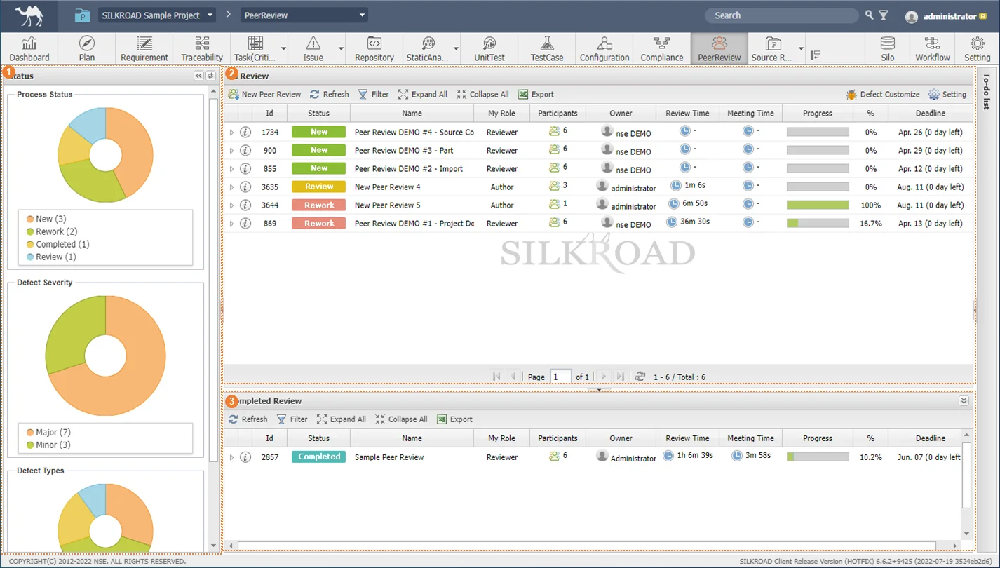 |
구분 | 명칭 | 설명 |
| Status | 피어리뷰 진행 현황, 결함 유형, 결함 심각도 그래프 |
| In Review | 진행 중인 피어리뷰 목록 |
| Completed Review | 완료된 피어리뷰 목록 |
① ‘New Peer Review’ 버튼을 클릭한다.
|
② ‘New Peer Review’창이 생성되면 ‘Name’, ‘Priority’, ‘Type’, ‘StartDate’, ‘EndDate’, ‘Access’, ‘Content’를 선택 또는 입력한다.
③ ‘Document List’, ‘Source List’ 펼침단추를 클릭하여 동료 검토 대상 자료(Material)를 Materials 영역에 드래그&드롭 한다.
Review Object 영역의 Project 기능을 통하여 실크로드에 등록된 Document를 동료검토 대상으로 선택할 수 있다. |
|
④ ‘Participant List’ 탭의 펼침단추를 클릭하여 자료를 검토할 검토자(Participant)를 Participants 영역에 드래그&드롭 한다.
⑤ 페이지 설정 아이콘을 클릭하여 리뷰할 페이지 번호를 설정한다.
리뷰할 페이지 설정시 해당 페이지만 리뷰가 가능하다. |
⑥ ‘OK’ 버튼을 클릭하여 생성한다.
|
SILKROAD 서버에 등록된 문서(SILKROAD Plan 모듈의 계획단계 문서, Requirement 모듈의 요구사항 문서, TestCase 모듈의 테스트 문서, Source Repository의 Source Code), 사용자 PC에 저장된 Word, PDF 문서를 추가할 수 있다. 또한 ‘Part’ 기능을 통해 텍스트 형식의 내용을 자료로 등록하여 리뷰 할 수 있다.
① ‘New Peer Review’ 창에서 ‘Document List’, ‘Source List’ 펼침단추를 클릭하거나 Review Object 영역의 Project 버튼을 클릭한다.
② 방법 1. 리뷰 대상이 될 문서를 마우스 드래그&드롭하여 ‘Materials’ 영역으로 가져온다.
③ 방법 2. 우클릭하여 ‘Add Materials’ 버튼을 클릭한다.
④ 선택한 문서 또는 Source Code가 ‘Materials’ 에 추가된다.
|
① ‘New Peer Review’ 창의 Review Object 영역에서 ‘Import’ 버튼을 클릭한다.
② 사용자 PC에 저장되어 있는 문서를 선택한다.
③ 선택한 문서가 ‘Materials’에 추가된다.
|
MS-Word(‘.docx’, ‘.doc’), PDF 형식의 파일을 ‘Import’ 기능을 사용하여 불러올 수 있다. 리뷰 대상 문서 추가 시 ‘PDF’ 파일로 자동 변환된다. |
① ‘New Peer Review’ 창의 Review Object 영역에서‘Part’ 버튼을 클릭한다.
② 생성된 편집기에서 리뷰 대상 문구, 이미지 등을 복사/붙여넣기 하여 편집기에 작성한다.
③ ‘Register’ 버튼을 클릭한다.
④ 이름을 작성하고 ‘OK’ 버튼을 클릭한다.
⑤ 작성한 문서가 ‘Materials’에 추가된다.
|
외부 파일 (인터넷 자료, 소스파일) 은 Part 기능을 사용하여 텍스트 형식으로 불러온 후 저장 시 리뷰 문서로 사용할 수 있다. |
① ‘New Peer Review’ 창에서 ‘Participant List’ 펼침단추를 클릭한다.
② 방법 1. 리뷰 참여자를 마우스 드래그&드롭하여 ‘Participants’ 영역으로 가져온다.
③ 방법 2. 우클릭하여 ‘Add Member’ 버튼을 클릭한다.
④ 선택한 멤버가 ‘Participant’ 에 추가된다.
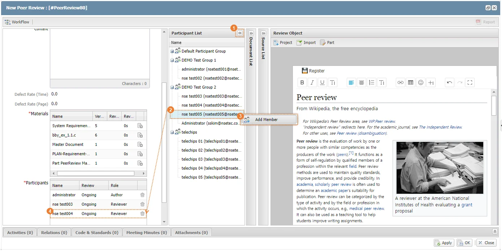 |
검토자 추가 시 Role은 리뷰 참여자들에 대한 속성값이며, Role에 따른 기능 차이는 없다. |
① 생성한 Peer Review 정보창 아이콘을 클릭한다.
② Name, StartDate, EndDate, Materials, Participants 항목(필수)과 나머지 항목을 입력한다.
③ OK 버튼을 클릭하여 저장한다.
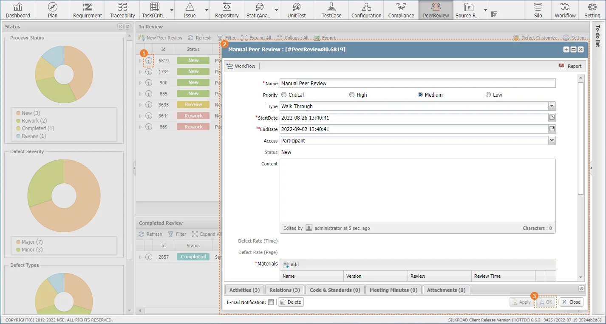 |
동료 검토는 리뷰 생성자가 워크플로우를 실행해야만 참여자들이 단계별로 리뷰 활동이 가능하다. 동료 검토 관리 시스템 (Peer Review)은 아래와 같이 5단계로 진행된다.
[Start(대기) → In Review(리뷰진행) → In Rework(문서 재작업) → In Confirm(관계자 검토) → End(종료)]
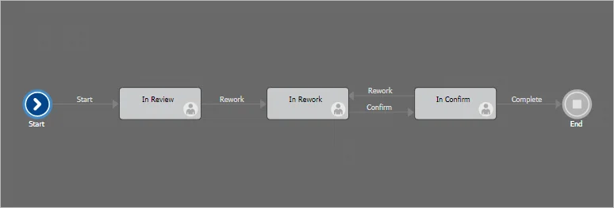 |
구분 | 명칭 | 설명 |
| Start | 리뷰 대기 - 리뷰 대상 문서, 참여자를 추가로 등록할 수 있고, 읽기 전용으로만 리뷰 대상 문서를 볼 수 있다. |
| In Review | 리뷰 수행 |
| In Rework | 리뷰 대상 문서 재작업 - 문서 편집 도구(DOCS)에서 리뷰 결과를 반영하여 대상 문서를 수정한다. - 작업된 문서는 리뷰 정보창의 Materials ‘ADD’ 버튼을 통하여 대상 문서로 추가해야 수정 본에 대한 검토를 받을 수 있다. - 읽기 전용으로만 리뷰 대상 문서를 볼 수 있다. |
| In Confirm | 리뷰 대상 문서 검토 |
| End | 리뷰 종료 |
① 방법 1. 워크플로우를 진행할 리뷰의 정보창 아이콘 클릭 후 ‘Workflow’ 버튼을 클릭한다.
② 방법 2. 리뷰 우클릭 - Workflow 버튼을 클릭한다.
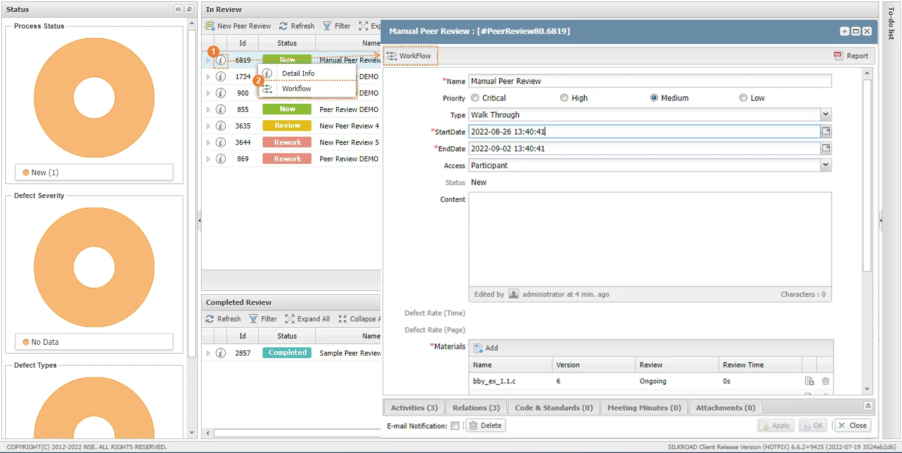 |
③ ‘Next’를 클릭하여 다음 절차를 수행할 플로우를 선택한다.
④ ‘Assignee(s)’를 클릭하여 해당 절차의 담당자를 선택한다.
⑤ ‘Comment’ 에 플로우에 대한 코멘트를 입력한다.
⑥ Assignment를 클릭하여 워크플로우를 진행한다.
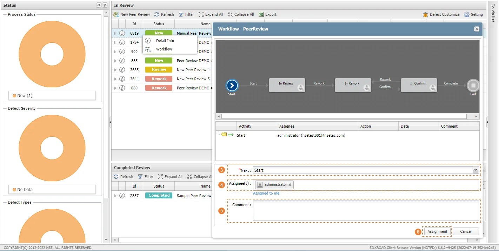 |
동료 검토 대기 (Start) 단계일 때, 피어 리뷰를 생성한 생성자가 워크플로우를 진행할 수 있다. 이후 단계부터는 워크플로우 상태 변경 조건과 동일하다. |
해당 단계에서는 리뷰 문서에 대한 읽기만 가능하며, 동료 검토 활동은 불가능하다.
생성한 리뷰는 생성자가 Workflow를 실행해야만 참여자들의 동료 검토 활동이 가능하다.
리뷰의 상태(Status)가 Review일 때, 참여자들의 리뷰 활동이 가능하다.
① Workflow를 ‘In Review’ 단계로 진행한다.
① ‘In Review’ 영역에서 수행하고자 하는 동료 검토의 펼침 단추를 클릭한다.
② 동료 검토에 등록된 리뷰 대상 문서의 ‘재생 버튼’을 클릭한다.
③ 선택한 문서의 동료 검토 활동 창이 생성되며 리뷰를 수행한다.
|
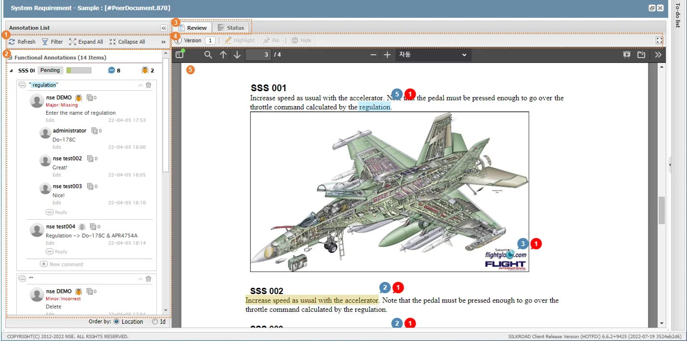 |
번호 | 명칭 | 설명 |
| Annotation List 메뉴바 | 어노테이션 목록 새로고침, 필터, 펼치기/접기 등 메뉴 |
| Annotation List | 문서에 포함되어 있는 요구사항, Test Feature/Test Case(Functional) 또는 코멘트가 작성된 부분(Non functional)에 대한 목록 |
| Review/Status 탭 | 문서뷰, 피어리뷰 현황 및 결과 뷰 탭 |
| 문서 메뉴바 | 문서 정보/버전 확인, 리비전 이력 확인, 비교, 코멘트 숨기기, Review 시간 측정, Diff Viewer(Source Code 동료검토시 활성화) 메뉴 |
| 문서뷰 | 문서 뷰 영역 |
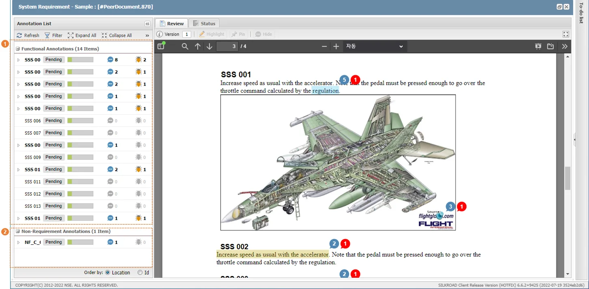 |
번호 | 명칭 | 설명 |
| Functional Requirement Annotations | 문서 내 식별/등록되어 있는 요구사항(Requriement) 또는 테스트(Test Plan, Test Case) 항목 목록이 표시된다. |
| Non - Requirement Annotation | 참여자가 요구사항 또는 테스트 항목 이외의 문서 영역에 Comment를 작성하였을 경우 해당 영역을 Non - Requirement 로 분류하여 표시한다. |
번호 | 명칭 | 설명 |
① | Highlight | 드래그 하여 코멘트 작성 |
② | Pin | 클릭하여 코멘트 작성 (텍스트 외 그림, 표 등) |
① 방법 1. 피어리뷰 메뉴바에서 ‘Highlight’를 선택한 후 코멘트를 작성하고자 하는 텍스트 영역을 드래그한다.
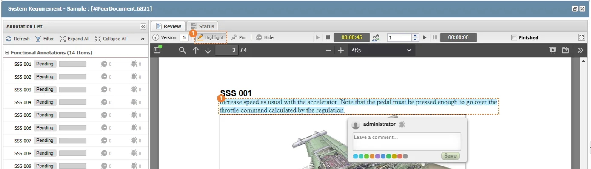 |
② 방법 2. 피어리뷰 메뉴바에서 ‘Pin’을 선택한 후 코멘트 작성하고자 하는 문서 이미지, 수식 등 빈 영역을 클릭한다.
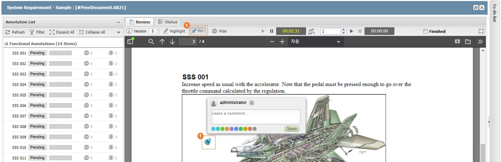 |
③ 해당 영역을 Defect 로 표시해야 하는 경우 ‘ ’ 아이콘을 클릭하여 심각도와 오류 유형을 선택한다.
’ 아이콘을 클릭하여 심각도와 오류 유형을 선택한다.
④ 코멘트 입력창에 검토 내용을 작성한다.
⑤ 코멘트의 색상을 선택한다.
⑥ ‘Save’ 버튼을 클릭하여 저장한다.
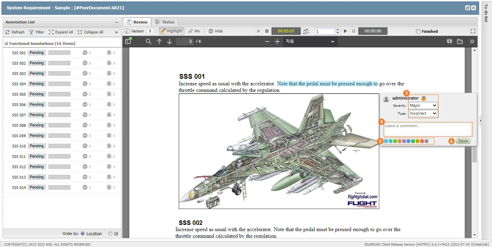 |
작성한 검토의견은 Annotation List 에 카드 형식으로 표시된다. 리뷰 메뉴 바의 ‘Highlight’, ‘Pin’ 선택 여부에 따라 코멘트 입력 방식이 변경된다. 이미 등록된 코멘트에 추가로 코멘트를 작성하고자 할 경우 Annotation List에 있는 해당 코멘트 영역 내 ‘New Comment’ 버튼을 클릭한다. |
① Annotation List에서 수정할 코멘트를 펼친 후 ‘Edit’ 버튼을 클릭한다.
② 수정 내용을 작성한 뒤 ‘Save’ 버튼을 클릭하여 저장한다.
|
① 답변을 작성하고자 하는 코멘트의 ‘Reply’ 버튼을 클릭합니다.
② 코멘트 답변을 작성한 후 ‘Save’ 버튼을 클릭하여 저장합니다.
|
① Annotation List에서 삭제할 코멘트를 펼친 후 ‘Edit’ 버튼을 클릭한다.
② ‘Delete’ 버튼을 클릭하여 삭제한다.
|
① 삭제할 각주의 휴지통 아이콘을 클릭합니다.
② ‘Yes’ 버튼을 클릭하여 삭제합니다.
|
작성된 코멘트와 관련된 파일을 추가할 수 있다. 업로드 된 파일은 다른 사용자와 공유할 수 있다.
① 파일 추가 아이콘을 클릭한다.
② ‘File Upload’ 창이 생성되면 ‘Browse’ 버튼을 클릭한 후 사용자 PC에서 파일을 추가한다.
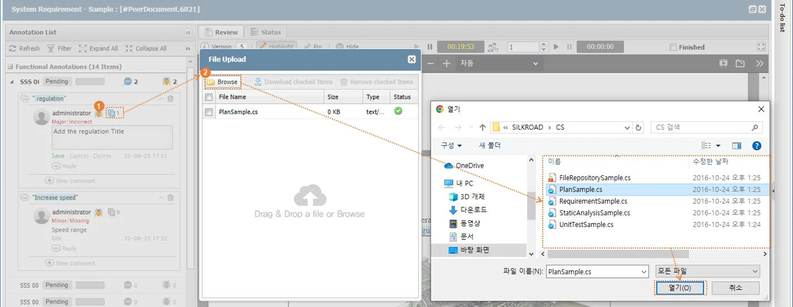 |
① 다운로드하고자 하는 파일이 등록된 Annotations을 선택한다.
② 파일 아이콘을 선택한다.
③ ‘File Upload’창이 생성되면 다운로드 할 파일을 체크한다.
④ ‘Download checked Item’ 버튼을 클릭하여 파일을 다운로드 한다.
|
① 다운로드하고자 하는 파일이 등록된 Annotations을 선택한다.
② 파일 아이콘을 선택한다.
③ ‘File Upload’창이 생성되면 삭제할 파일을 체크한다.
① ‘Remove checked Items’ 버튼을 클릭한다.
② ‘Save’ 버튼을 클릭하여 저장한다.
|
대상 문서에 등록된 코멘트에 대해서 ‘Accept’ 또는 ‘Rework’ 선택하여 Author 또는 Moderator 가 각 요구사항에 대한 Reviewer들의 의견을 취합할 수 있다.
① 의사결정을 할 코멘트의 의사결정 항목 아이콘 ‘Pending’에 마우스 오버 한 뒤, ‘Accept’, ‘Rework’ 버튼을 클릭한다.
② Annotation List 메뉴 바에서 ‘Accept All’ 또는 ‘Rework All’을 클릭한다.
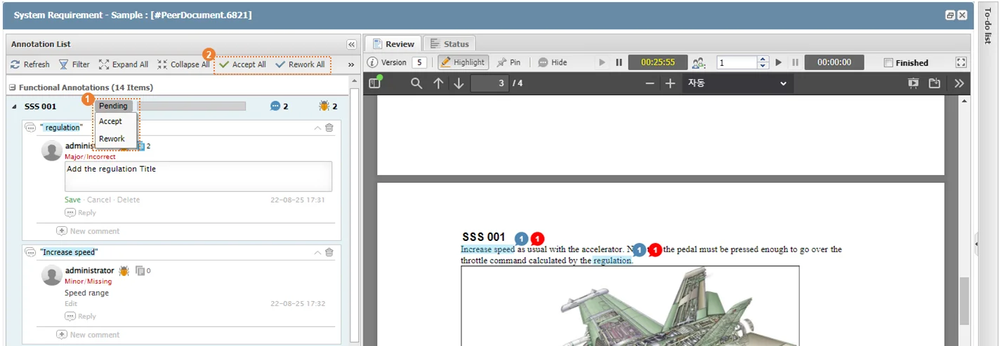 |
Annotation List 메뉴 바에서 ‘Accept All’ 또는 ‘Rework All’을 클릭하여 모든 항목에 대한 선택을 할 수 있다. 투표 시 바(bar) 그래프에 해당 코멘트에 대한 동료 검토 참여자들의 의사 결정에 따른 Accept/Rework 개수가 표시된다. |
① Annotation List에서 ‘Filter’ 버튼을 클릭한다.
② 필터 조건을 선택한다. (Accept / Rework / Pending / Comment by me)
|
‘Accept’, ‘Rework’, ‘Pending’, ‘Comment by me(본인 작성 코멘트)’ 로 구성된다. 필터 적용 후 ‘All’을 클릭하면 필터 결과가 초기화된다. |
① 펼침 아이콘을 클릭한다.
② ‘Export’, ‘Export To Excel’ 버튼을 클릭한다.
③ 각주 목록이 MS-Word, MS-Excel 파일로 다운로드 된다.
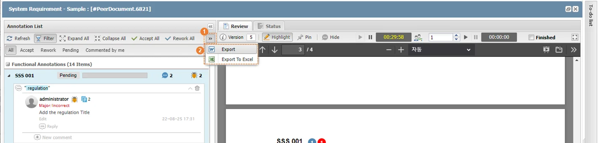 |
① Annotation 하단 ‘Location’ 버튼을 클릭하여 각주 위치를 기준으로 정렬한다.
|
② ‘Id’ 버튼을 클릭하여 각주 ID 기준으로 정렬한다.
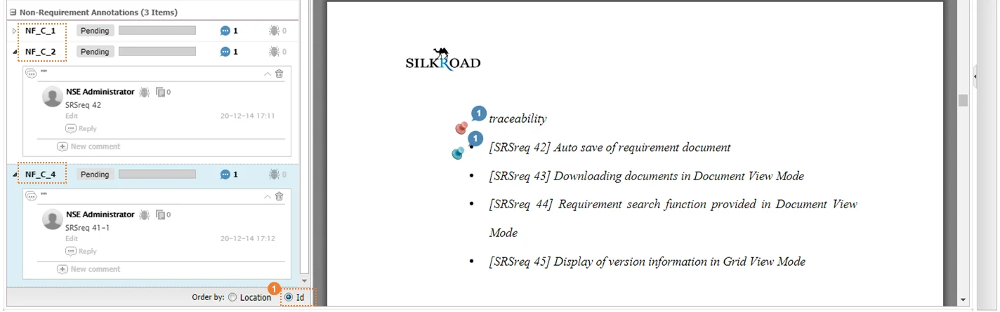 |
① ‘Hide’ 버튼을 클릭하여 작성된 코멘트를 보이지 않게 설정한다.
② ‘Show’ 버튼을 클릭하여 작성된 코멘트를 보이게 설정한다.
|
리뷰가 완료된 문서에 대한 업데이트를 실시하는 단계이다. 리뷰 대상 문서를 개정하여 개정된 새로운 버전을 ‘Material’에 추가하여 기존 버전 및 개정된 버전 문서들을 다음 단계(Confirm)에서 최종 검토한다.
① 워크플로우를 ‘In Rework’ 단계로 진행한다.
② ‘In Review’ 단계의 검토 결과를 반영하여 대상 문서를 편집한다.
③ 동료 검토 정보창의 ‘Materials’ 필드의 ‘Add’ 버튼을 클릭한다.
|
④ ‘Document List’, ‘Source List’ 펼침 단추를 클릭하여 개정된 대상 문서를 드래그&드랍한다.
⑤ ‘Rework Time’을 입력한 후 ‘OK’ 버튼을 클릭한다.
⑥ ‘OK’ 버튼을 클릭하여 동료 검토 편집을 저장한다.
|
동료 검토 작성자가 동료 검토 참여자들의 결과를 최종적으로 검토/확인한다.
① 워크플로우를 ‘In Confirm’ 단계로 진행한다.
② ‘In Review’ 영역에서 최종적으로 검토하고자 하는 동료 검토의 펼침 단추를 클릭한다.
③ 동료 검토에 등록된 리뷰 대상 문서의 ‘재생 버튼’을 클릭한다.
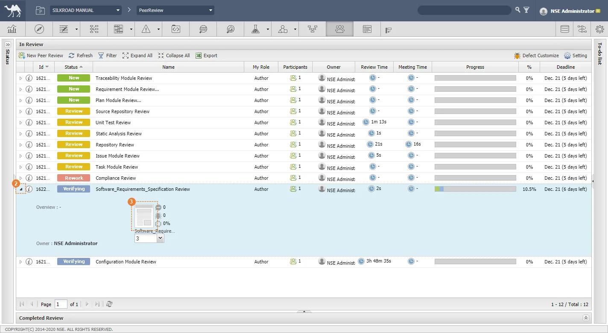 |
④ ‘In Confirm’ 단계 담당자는 동료 검토 참여자들의 리뷰 결과에 대해 ‘Accept’, ‘Rework’의 최종 결정을 선택한다.
⑤ 동료 검토 참여자들의 Comment 채택을 위해 ‘(Selected)’를 클릭한다.
|
최종 검토/확인이 완료된 동료 검토의 워크플로우를 종료(완료)하거나 ‘In Confirm’ 단계의 검토 결과를 반영하여 문서를 재개정(Rework) 한다. 완료된 동료 검토는 ‘Complete Review’ 목록에 포함하며 Review 기능은 수행할 수 없다.
‘2.4 문서 재작업 (Workflow – Rework) 챕터’를 참고하여 수행한다.
동료 검토 시 유형에 대한 설정을 할 수 있다.
① ‘InReview’에서 ‘Defect Customize’ 버튼을 클릭한다.
② ‘Severity’ 탭에서 심각도에 대한 Default 설정을 할 수 있다.
③ ‘Type’ 탭에서 ‘Add’ 버튼 클릭하여 유형을 추가한다.
④ ‘Type’ 탭에서 삭제할 유형 선택한 뒤 ‘Delete’ 버튼 클릭하여 유형을 삭제한다.
⑤ ‘Save’ 버튼을 클릭하여 설정을 저장한다.
|
워크플로우의 확인(In Confirm) 단계부터 PeerReview Final Report를 생성할 수 있다.
① ‘In Confirm’, ‘Complete’ 상태인 리뷰의 펼침단추를 클릭한다.
② 재생버튼을 클릭한다.
③ 메뉴바의 ‘Final Report’ 버튼을 클릭한다.
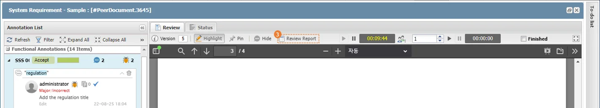 |
④ 피어리뷰 결과 및 각 요구사항/테스트 항목에 대한 참여자들의 의사결정 데이터가 MS-Word 파일로 다운로드 된다.
|
번호 | 명칭 | 설명 |
| Project Name | 프로젝트 명 |
| Author | Review 생성자 명 |
| Submit Date | Review Start(Workflow) 날짜 |
|
번호 | 명칭 | 설명 |
| Document Name | Review 대상 문서 명 |
| Author | Final Report 다운로드 사용자 명 |
| Status | Peer Review Workflow 상태 |
| Due Date | Review 기한 |
Progress Rate | Review 진행률 (Accept, Rework 선택 완료 개수/(전체 Annotation 개수x Review 참여자 수)*100) | |
| Reviewed Time | Review 참여자 Review 시간 합계 |
| Comments | Comment 총 개수 |
| Defects | Defect 총 개수 |
| Participants | Review 참여자별 Review 진행 현황 |
|
번호 | 명칭 | 설명 |
| Id | Annotations ID(요구사항/테스트항목의 경우 사용자가 부여한 ID정보 표시, Non-Requirements Annotations의 경우 SILKROAD가 자동으로 부여하는 ID 정보 표시) |
| Type | Annotation Type(요구사항/테스트항목=Functional, 그 외 Comment가 작성된 문서 영역=Non-Requirement) |
| Text | Annotation 내용(Text만 표시) |
| Defects | Reviewer가 선택한 Defect 정보 |
Selected Comments | Verifying 단계에서 최종 채택된 comment 내용과 작성자 | |
| Writer | 문서 내 Review가 필요한 영역을 드래그로 지정한 Review 참여자 |
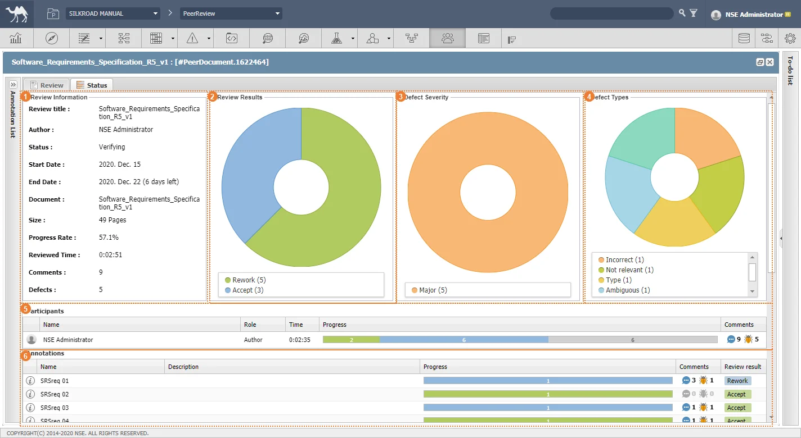 |
번호 | 명칭 | 설명 |
| Review Information | 해당 Peer Review 정보 |
| Review Results | Accept/Rework 선택 결과 그래프 |
| Defect Severity | Defect(결함) 심각성 선택 결과 그래프 |
| Defect Types | Defect 유형 선택 결과 그래프 |
Participants | 해당 Peer Review 참여자들의 Review 진행률(전체 요구사항 또는 테스트 항목에 대한 Review 내용 선택/입력률 표시) | |
| Annotations | 요구사항/테스트 또는 비 요구사항/비 테스트 항목 별 의사결정 항목(Accept/Rework) 선택 결과, 작성된 Comment 개수, Defect 선택 결과 표시 |
번호 | 메시지 | 설명 | 해결방안 |
|---|---|---|---|
1 | This review will be opened read only. | Participant에 참여되지 않은 계정이 리뷰 재생버튼을 클릭한 경우 | 리뷰 정보창에서 ‘Participants’-‘Add’ 버튼을 클릭하여 계정을 참여자로 추가해야 함. |
2 | The minimum value for this field is 1 | ‘Peer Review Configuration’ 창에서 ‘Limit idle time’을 1미만으로 설정하는 경우 | 1~100 사이의 숫자를 입력해야 함. |
3 | The maximum value for this field is 100 | ‘Peer Review Configuration’ 창에서 ‘Limit idle time’을 100초과로 설정하는 경우 | 1~100 사이의 숫자를 입력해야 함. |
4 | ‘입력값’ is not a valid number. | ‘Peer Review Configuration’ 창에서 ‘Limit idle time’ 또는 ‘Font Size’ 를 잘못된 입력을 한 경우 | ‘Limit idle time’은 1~100사이 숫자를 입력해야하고 ‘Font Size’ 는 11~50 사이의 숫자를 입력해야 함. |
5 | The minimum value for this field is 11 | ‘Peer Review Configuration’ 창에서 ‘Font Size’ 를 11미만으로 설정한 경우 | 11~50 사이의 숫자를 입력해야 함. |
6 | The maximum value for this field is 50 | ‘Peer Review Configuration’ 창에서 ‘Font Size’ 를 50초과로 설정한 경우 | 11~50 사이의 숫자를 입력해야 함. |
7 | You can not enter empty value. | ‘Defect Customize’창에서 ‘Type’ 생성 시 이름을 입력하지 않고 저장하고자 하는 경우 | 이름을 입력한 후 저장해야 함. |
8 | You can not enter abbreviation keyword("(\"). | ‘Defect Customize’창에서 ‘Type’ 생성 시 이름을 ‘(’, ‘\’를 포함하여 작성한 후 저장하고자 하는 경우 | 특수문자 ‘(’, ‘\’를 포함하지 않고 이름을 입력해야 함. |
9 | At least 1 document is needed. | 동료검토 문서/소스 파일이 등록되지 않은 상태로 PeerReview 생성시도시 | 동료검토를 진행할 아이템을 등록 후 생성을 시도해야 함. |
10 | Current status is still not ready for review. Do you want to Activate Workflow for review initiation? If you click No, it will be opened read-only | 리뷰 Status 가 ‘New’ 인 리뷰일 때, 리뷰 재생버튼을 클릭한 경우 | 리뷰 워크플로우를 ‘Review’로 단계를 진행하거나 현재 발생된 메시지창에서 ‘Yes’ 버튼을 클릭하여 리뷰 워크플로우를 자동으로 진행해야 함. |
11 | Current status is still not ready for review. Do you want to Activate Workflow for review initiation? If you click No, it will be opened read-only | ||
12 | This document has already been registered. | 문서를 중복 등록시도할 경우 | - |
13 | This source file has already been registered. | 소스파일을 중복 등록시도할 경우 | - |
14 | The writer can not be removed. | PeerReview 생성자 삭제 시도시 | - |
15 | This documents is not a revised document. | Rework 단계에서 수정된 아이템이 아닌 다른 아이템 등록 시도할 경우 | Review 단계에서 동료검토를 통해 수정된 아이템을 등록해야 함. |